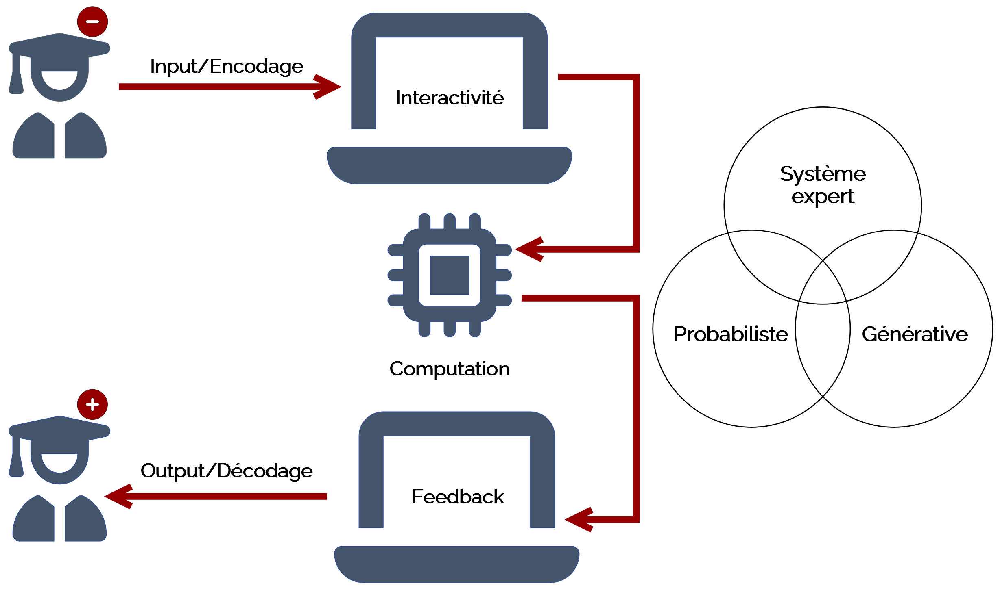
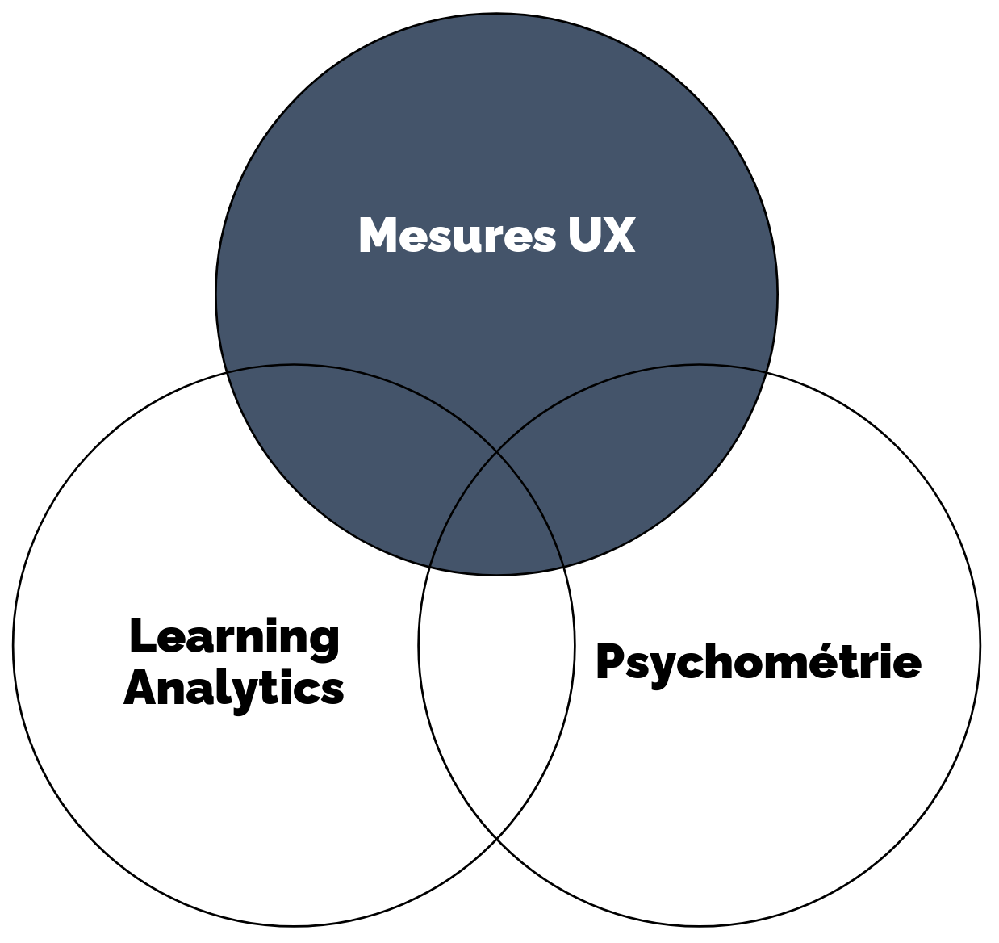

Mesures et évaluation UX en technologie éducative
Mattia A. Fritz
TECFA, Université de Genève
Technologie éducative
La technologie éducative étudie et développe l'usage systématique des procédés, théories et méthodes technologiques pour améliorer l'enseignement, l'apprentissage et les systèmes éducatifs (Bates & Bates, 2005 ; Weller, 2020).
- Elle scénarise une interaction avec la technologie qui sous-tend des processus d'apprentissage
- Elle vise un horizon plus large que l'apprentissage de la technologie elle-même
- Elle défère à la technologie une partie ou l'ensemble du contrat pédagogique (rapport effort/retour)
Avec une interface utilisateur
 L'interface (1) numérise un processus cognitif, affectif ou social de l'apprenant-e, (2) déclenche un traitement algorithmique et (3)restitue un état reflétant l'évolution du contrat pédagogique.Double perspective
Les éléments de l'interface permettent aux apprenant-es d'effectuer des actions sous-tendant des processus d'apprentissage, mais aussi de fournir des données utiles pour analyser ces processus.

Affordance
Traçage
Approches complémentaires
 L'UX, les Learning Analytics et les mesures psychométriques présentent des recouvrements et sont souvent combinés dans la recherche en technologie éducative.Perspectives principales
-
Mesures UX
Plutôt centrées sur l'outil et sur l'adéquation entre les objectifs, la tâche, et les connaissances de l'utilisateur, ainsi que sur la satisfaction de l'apprenant-e. -
Learning Analytics
Plutôt centrés sur les objectifs et la scénarisation pédagogiques, ainsi que sur l'identification de facteurs facilitant ou entravant le processus d'apprentissage. -
Mesures psychométriques
Plutôt centrées sur des facteurs latents, non observables directement, mais qui peuvent être inférés à partir d'indicateurs d'usage ou perception.
Exemple de recherche
Emotional awareness
Informations sur ses propres émotions ou sur celles des autres
qui sont instrumentales à la compréhension des causes et
conséquences d'une situation (Rimé, 2009; Scherer, 2005, 2019; Van
Kleef, 2018)
Dans les environnements d'apprentissage médiatisés
Absence des indices para-verbaux, mais possibilité d'exploiter le
numérique pour aller au-delà de la reproduction des interactions
en face-à-face (Cernea & Karren, 2015; Harley, 2017)
Emotional Awareness Tool (EAT)
Outil qui permet aux apprenant-es d'exprimer et monitorer leurs
propres émotions et/ou celles des collègues dans un environnement
médiatisé par ordinateur (Fritz, 2023; Fritz & Bétrancourt, 2025,
Lavoué et al., 2020)
-
Auto‑évaluation des émotions
Boehner et al., 2007; Fontaine et al., 2013; Lavoué et al., 2020 -
Disponible au fil du moment
Graesser et al., 2014; Molinari, Chanel, et al., 2013; Miller & Hadwin, 2015 -
Basé sur les théories de l'appraisal
Brosch et al., 2013; Pekrun, 2006; Scherer, 2005; Scherer & Fontaine, 2019